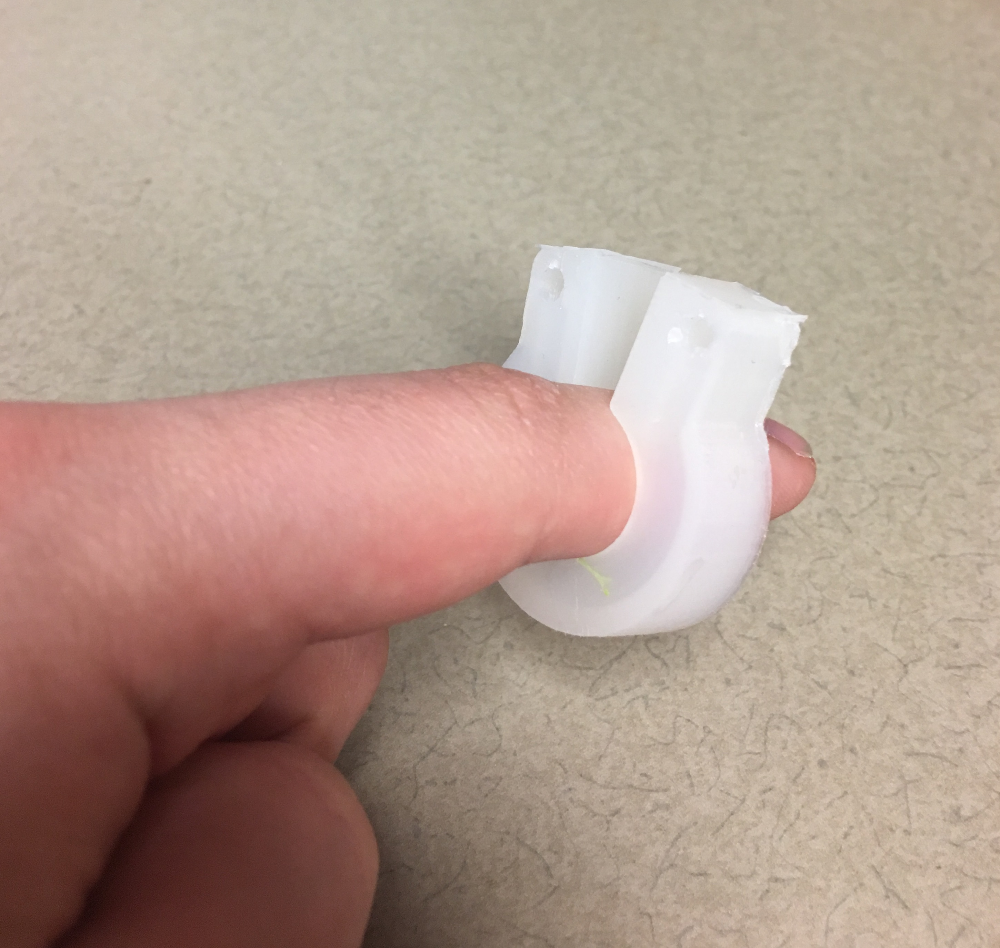
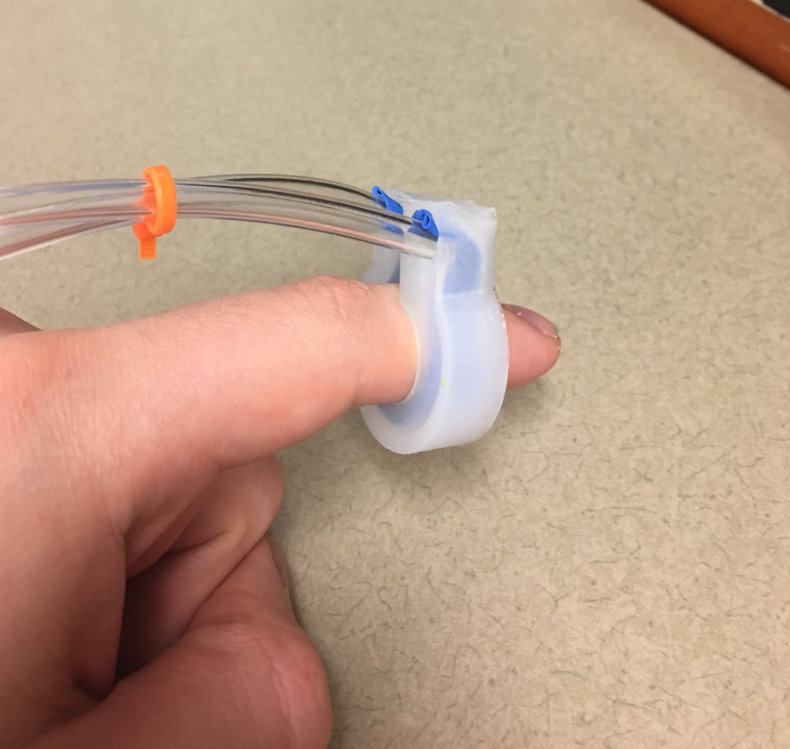

Human-Robot Haptic Interface
Overview
As part of my final project at Northwestern University, I worked with professor Mitra Hartmann in her research on rat whiskers. As the group has been studying the subject for years, they have researched and developed many interesting topics. Most notably, they have developed a mechanical rat whisker sensor which is capable of obtaining moment and force information upon contact with an object. In an effort to exploit this data, my project aims at creating a human interface for the device. Specifically, I seek to design and build a system which will give humans control over an array of rat whiskers, and accurately and intuitively relate that information back to the user in the form of haptic feedback.
The applicability of this research can scale to multiple fields. In surgical robotics, and other areas where high precision is mandatory, the use of visual feedback alone may not be enough, and haptics may prove to be the best solution. Similarly, in applications where other sensory information just isn't possible due to lack of light, or other obstructions, we may find that having the added sense of touch can make difficult operations exponentially simpler.
Early Prototyping
Early stage research was focused on the ability to give the user feedback which could relate back a sense of magnitude and position given whisker data. In order to do this, small rings are used to apply pressure at several different locations throughout a person’s fingers. When a rat whisker comes into contact with a surface, pressurizing the correct ring will give a sense of the forces being felt in a specific location.
The proposed idea has several key components: mechanical design, electrical design, and embedded programming. The next few sections will go into more detail about each.
Ring Design
In designing a ring for a person to wear, several features need to be considered. An ideal ring would have a degree of flexibility in order to fit on a variety of finger sizes, a small size in order to allow the user to maintain full range of motion, and good functionality (i.e. the ring should have good resolution when pressurizing a finger). For this initial iteration of the project, the proposed ring design can be seen in the image below.
The ring is made by casting a silicone material. The result is a flexible piece which can be adjusted to fit on a variety of different circumferences. Notice from the image that the ring has an inner cavity. This cavity holds a balloon which changes in shape as air is pumped into it. One important consideration is the fact that the tube is not
|  |  |
Mechatronics
System Control
Future Work
The project is only in its early stages. In the following months I hope to continue the goal stated in the overview. The next immediate step is to create a full control loop using a micropump attached to a pressure sensor. With the use of a driver for the piezo, and a microcontroller, the design should be capable of providing haptic feedback to a user while actively controlling the magnitude of the forces sensed through a computer.
Further work will try and include the rat whiskers. A system which will allow a user to actively move the devices is the second big step in the project. The final step will be to integrate the two and, once fine tuned, bring together several of these models to, as is the goal, allow a person complete haptic feedback.